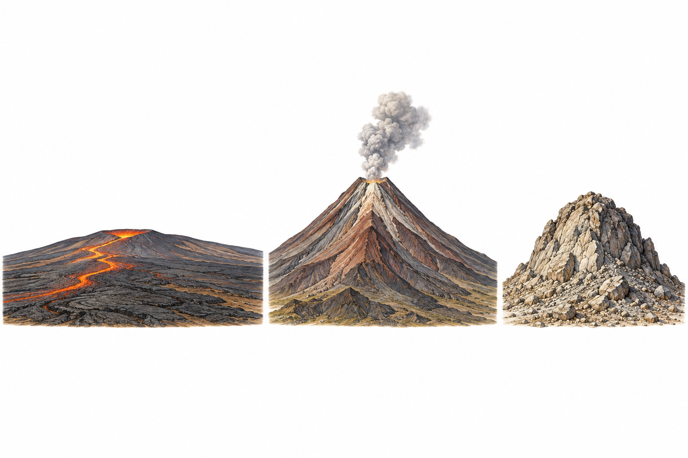
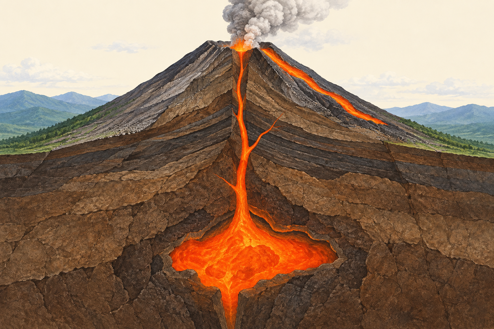
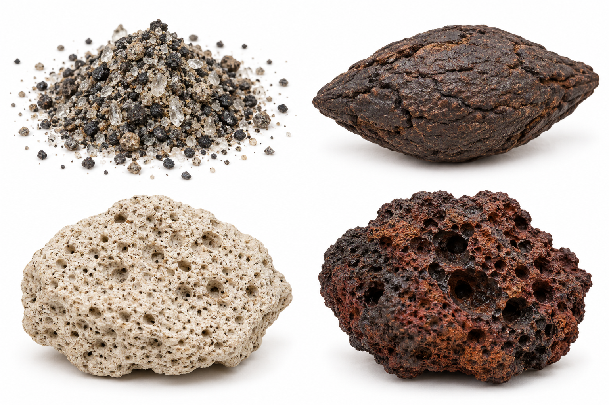
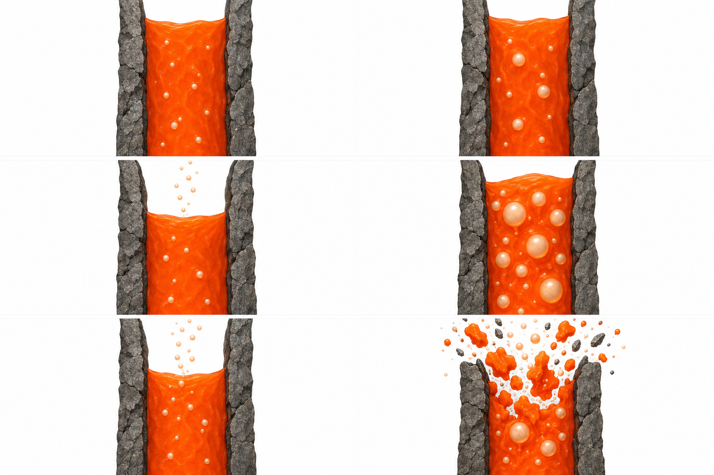
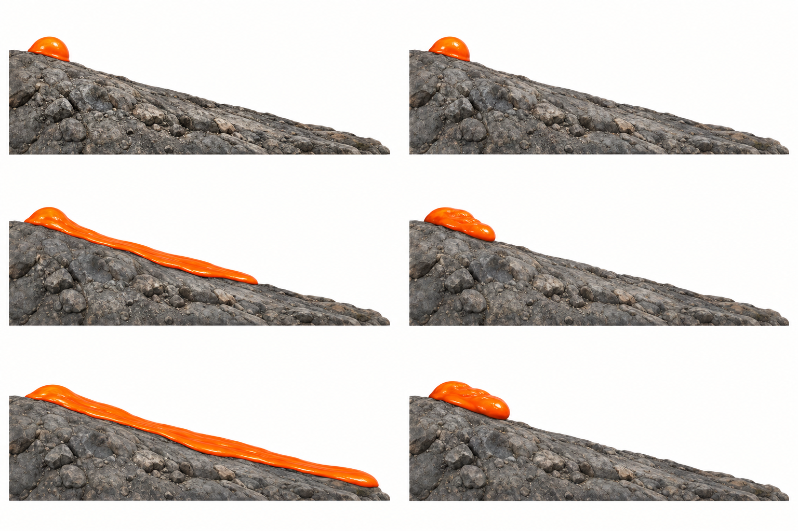
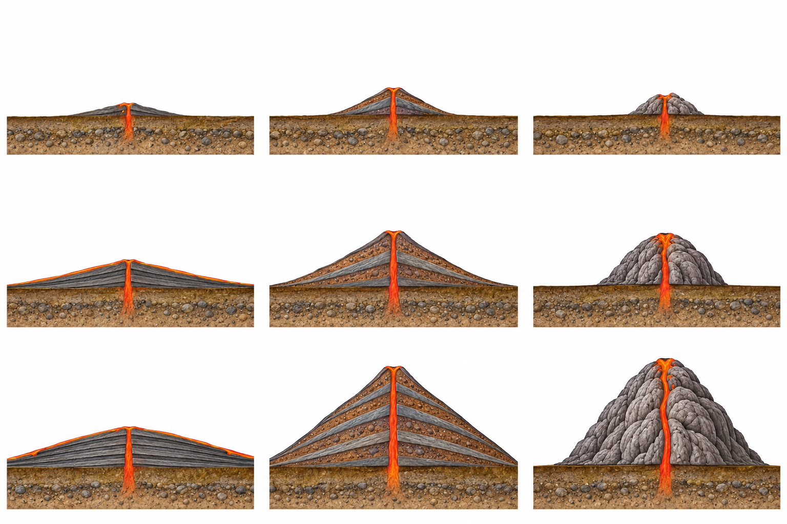
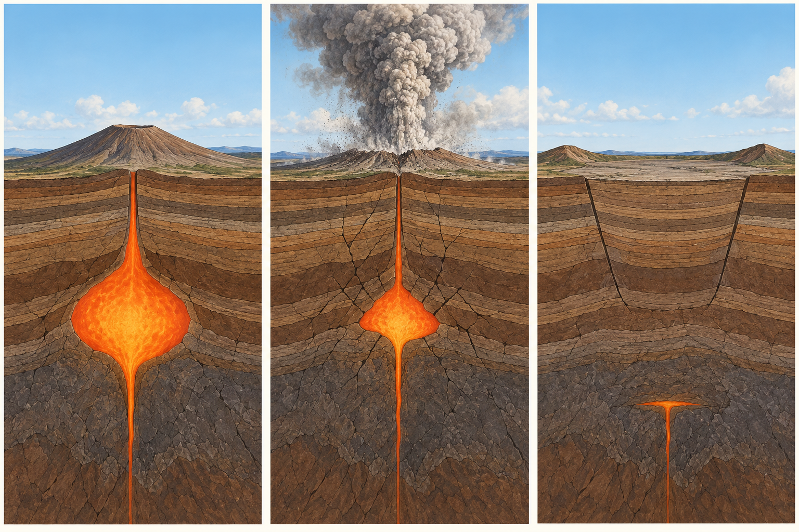
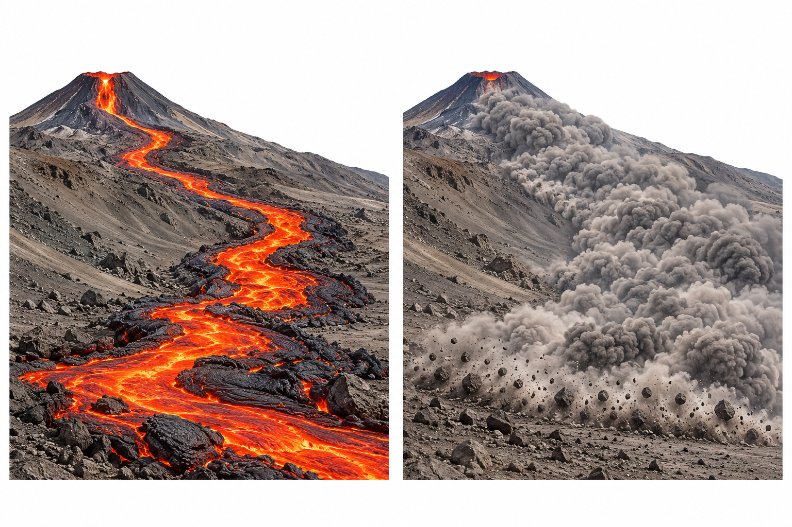

中1 理科｜火山
火山
中学1年・地学
火山
流れ方が、山の形を変える。
気体の抜け方が、噴火を変える。

中1 理科｜火山
地下のマグマが、地表へ出る

地下で岩石がとけたものが
マグマ。
たまる場所がマグマだまり。
マグマ。
たまる場所がマグマだまり。
地表に流れ出たものが
溶岩。
溶岩。
火口から物質が噴き出す
現象が 噴火。
現象が 噴火。
中1 理科｜火山
火山が出すものを、見分ける
火山灰：細かな岩石などのかけら

火山弾：溶けて飛び出したかたまり
火山灰 は直径2 mm未満。
2〜64 mmの粒は火山れき。
2〜64 mmの粒は火山れき。
火山弾 は溶けた状態で飛び出し、
冷えて固まる。
冷えて固まる。
中1 理科｜火山
軽石の穴は、気泡の跡
白っぽく、穴が多い軽石
マグマ中の気泡を拡大

マグマが泡を含んだまま固まると、
気泡の跡が残る。
気泡の跡が残る。
気体も 火山ガス として出る。
主な成分は水蒸気。
主な成分は水蒸気。
中1 理科｜火山
ねばりけで、流れ方が変わる
ねばりけが弱いねばりけが強い

流れ始め時間がたつさらに時間がたつ
弱い → 薄く、遠くへ広がりやすい。
強い → 厚く、近くにとどまりやすい。
中1 理科｜火山
広く流れて固まる。それが重なる

溶岩が広く流れ、冷え固まる
後の溶岩が、その上へ広がる
繰り返すと、広く緩やかな山に
薄く広がった溶岩の上に、
次の溶岩が重なる。
次の溶岩が重なる。
緩やかな斜面の
盾状火山。
例：マウナロア。
盾状火山。
例：マウナロア。
中1 理科｜火山
流れにくい溶岩は、火口の近くに
ねばりけの強い溶岩が出る
遠くへ流れず、近くで厚くなる
溶岩が供給され、盛り上がる
遠くへ広がらず、
火口の近くに厚くたまる。
火口の近くに厚くたまる。
盛り上がった
溶岩ドーム。
例：昭和新山。
溶岩ドーム。
例：昭和新山。
中1 理科｜火山
溶岩だけでなく、火山灰なども重なる
溶岩や岩片が積もる
噴火を繰り返し、層が重なる
円すい形の山に育つ
溶岩と、火山灰などの
噴出物が重なる。
噴出物が重なる。
層を重ねた
成層火山。
例：富士山・桜島。
成層火山。
例：富士山・桜島。
中1 理科｜火山
マグマが上がると、泡ができて膨らむ
マグマには、気体の成分が
とけこんでいる。
とけこんでいる。
上昇して周囲の圧力が下がると、
とけきれず気泡になる。
とけきれず気泡になる。
気泡が膨らみ、マグマを
押し出す力の一つになる。
押し出す力の一つになる。
中1 理科｜火山
気体が逃げるか、閉じ込められるか
ねばりけが弱い場合
気泡がある
気泡が上がって抜ける
気体が逃げ、溶岩が流れ出る
ねばりけが強い場合
気泡がある
気体が抜けにくい
膨張でマグマがちぎれる
気体が抜けやすいと、
比較的穏やかに溶岩が出やすい。
比較的穏やかに溶岩が出やすい。
抜けにくい気体が膨らむと、
爆発的な噴火になりやすい。
爆発的な噴火になりやすい。
中1 理科｜火山
覚えること｜ねばりけから、2つにつなぐ
ねばりけ流れ方 → 山の形気体の抜け方 → 噴火
弱い広く流れる
→ 緩やかな盾状火山抜けやすい
→ 比較的穏やか
→ 緩やかな盾状火山抜けやすい
→ 比較的穏やか
強い近くにたまる
→ 溶岩ドーム抜けにくい
→ 爆発的になりやすい
→ 溶岩ドーム抜けにくい
→ 爆発的になりやすい
代表的な傾向。成層火山は、溶岩や火山灰などの重なりに注目する。
中1 理科｜火山
説明できる？ 形と噴火には理由がある
遠くまで広がらず、盛り上がる
穴の多い軽石ができる
溶岩のねばりけが強く、
火口の近くにたまりやすいから。
火口の近くにたまりやすいから。
マグマが気泡を含んだ状態で
固まり、気泡の跡が残るから。
固まり、気泡の跡が残るから。
中1 理科｜火山
積み上がるだけでなく、沈み込むことも
噴火前

多量のマグマが出る
広い地面が沈み込む
マグマが多量に出ると、
上の地面を支えにくくなる。
上の地面を支えにくくなる。
沈み込んでできる広いくぼみが
カルデラ。
カルデラ。
中1 理科｜火山
今、噴火していなくても「活火山」
おおむね過去1万年以内に
噴火した火山。
噴火した火山。
または、現在活発な
噴気活動がある火山。
噴気活動がある火山。
これらを 活火山 という。
中1 理科｜火山
溶岩流と火砕流は、流れるものが違う
溶岩流

火砕流
溶岩流：溶けた岩石が
地表を流れる。
地表を流れる。
火砕流：高温の岩片・
火山灰・気体が混ざって
高速で流れ下る。
火山灰・気体が混ざって
高速で流れ下る。
中1 理科｜火山
火山灰や噴石は、空からも届く
火山灰は風に運ばれ、
遠くにも降り積もる。
遠くにも降り積もる。
大きな噴石は、火口から
勢いよく飛ぶことがある。
勢いよく飛ぶことがある。
ハザードマップで
想定される災害範囲を知る。
想定される災害範囲を知る。
中1 理科｜火山
地下の熱は、暮らしにも使われる
地下の熱で水が温められ、
温泉 として利用される。
温泉 として利用される。
地下の蒸気などを利用して
地熱発電 を行う。
地熱発電 を行う。
火山の地形や景観も、
地域の資源になる。
地域の資源になる。
中1 理科｜火山
冷え固まったマグマから、岩石へ
地表で冷える
地下でも冷える
マグマが冷えて固まった岩石が
火成岩。
火成岩。
次は、冷える場所や速さによって
岩石のつくりがどう変わるか。
岩石のつくりがどう変わるか。